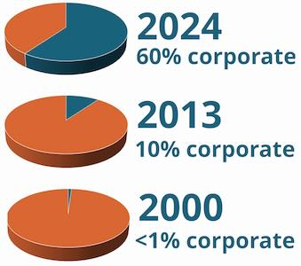
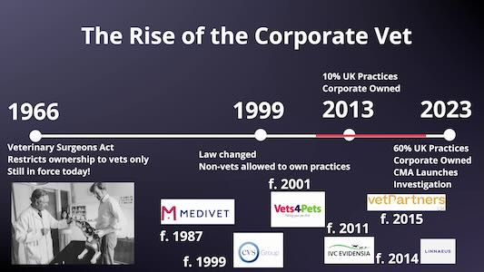
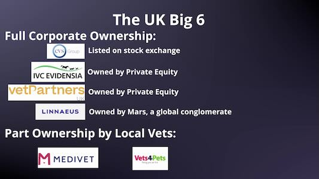

The Rise of the Corporate Vet Clinic: What It Means for You and Your Pet
Are You Being Overcharged For Petcare?
Published on: October 31, 2025
Reviewed on: October 31, 2025
The Results of the CMA Investigation
Did you know that more than 60% of UK veterinary practices are now owned by large corporate groups?
That’s up from just 10% in 2013, and almost zero in 2000.
This shift isn’t unique to the UK. The same trend is being seen across the US, Canada, Australia, New Zealand, and Europe.
It’s causing growing debate and concern among pet owners.
Why has your friendly local clinic become part of a corporate chain?
What does that mean for your pet’s care, and for your wallet?
Price inflation has grown through the roof, with a 63% price increase documented between 2016 and 2023 by the CMA. This is compared to general services inflation of only 32%.
What could have caused this? Many possibilities have been suggested, but with a poorly competitive market corporate greed is a chief concern:
- Corporate Greed?
- Staffing Shortages?
- Brexit?
- Regulatory Changes?
- Taxation Changes?
- National Minimum Wage Inflation?
- Improved Recognition and Pay for Veterinary Nurses?
- Better Working Conditions for Staff?
- Improving Standards Of Medical Care For Pets?
- Trend towards keeping dog breeds with higher average healthcare costs (eg the French Bulldog)?
Ultimately, this is a matter of trust.
When healthcare becomes driven by business interests rather than compassion, incentives can shift — and the care provided may change with it.
Because of mounting complaints, the UK’s Competition and Markets Authority (CMA) has begun investigating this issue directly.
By autumn 2025, they published their initial findings and recommendations.
So — what did they find, and do the measures go far enough?
The Big Picture: What’s Happening in Veterinary Care
The rise of corporate ownership began in the UK back in 1999, when the Veterinary Surgeons Act (1966) was amended to allow non-veterinarians to own vet practices.
Originally, this law was written for a much simpler time - when most vets were self-employed, often working from their homes or cars, with minimal overheads and a small range of medicines.
After 1999, changes were slow at first. But by the 2010s - with the rise of private equity and cheap finance - the pace accelerated dramatically.
Large veterinary groups began acquiring independent clinics at scale, consolidating them under shared ownership. Eventually, mergers and buyouts left just six major groups dominating the UK market.
The UK Big 6 and their ownership structures:
In 2023, the CMA stepped in after receiving tens of thousands of complaints from pet owners frustrated by rising prices and limited transparency.
Their investigation attracted 45,000 individual responses, an unprecedented number for any CMA inquiry, showing just how important this issue is to the public.
Key Concerns Identified by the CMA
The CMA’s investigation highlighted three central problems within the veterinary industry:
1. Lack of Transparency
Many owners don’t know who owns their vet practice.
Large corporate groups often keep local, independent-sounding names while maintaining entirely different management and pricing structures behind the scenes.
2. Pricing and Competition
In many cities, multiple clinics with different names are actually owned by the same corporate group - reducing genuine competition.
The CMA found that average vet fees rose 63% between 2016 and 2023, compared to 32% inflation across general services.
This lack of competition can lead to inflated prices and significant variation in prescription mark-ups.
3. Outdated Regulation
The current legislation still dates from the 1960s and mainly regulates individual vets, not the corporations behind them.
The system simply hasn’t caught up with modern business models.
The CMA’s Recommendations
The CMA’s findings confirmed what many already suspected:
Vet practices owned by large groups charge higher prices on average and achieve greater profit margins than would be expected in a competitive market.
To improve transparency and fairness, they proposed several steps:
-
Publish clear price lists for common services and treatments.
-
Create an online comparison tool to allow pet owners to check prices between clinics.
-
Disclose ownership structures - so clients know who actually owns their vet.
-
Provide written cost estimates for all procedures over £500.
-
Make prescriptions easier to access for buying medication online.
-
Introduce a clear complaints process.
-
Modernise regulation, bringing veterinary businesses under the oversight of the Royal College of Veterinary Surgeons (RCVS).
While these steps sound promising, questions remain about how practical or fair they will be - especially for small independent clinics.
What This Means for You as a Pet Owner
This isn’t about blaming individual vets.
Most veterinarians, whether in independent or corporate practices, genuinely want to do their best for your pet.
But business structures can influence:
-
What services are offered
-
How consultations are priced
-
How medicines are dispensed
You might notice more clinics promoting care plans, bundles, or membership packages. These can offer value - but it’s still important to ask questions and make sure they’re right for your pet’s needs.
How to Stay Informed
When choosing a vet:
-
Check who owns the clinic. Ownership details may only appear in fine print or hidden in the waiting room.
-
Ask the reception team directly. Their attitude can reveal a lot about how the clinic is run.
-
Evaluate healthcare plans. The CMA found that about pet healthcare plans can be misleading. They can result in money saving, compared to buying medications direct from the practice, but only if they use all included treatments. And if buying the preventative medications online all cost savings disappear.
-
Ask for estimates. A written cost estimate helps you understand what to expect and ensures transparency.
-
Request prescriptions. In the UK, vets are legally required to provide one if you’d like to buy your pet’s medication elsewhere.
Price Comparison — A Double-Edged Sword
While the idea of a vet price comparison site sounds appealing, it’s complicated in practice.
Veterinary services vary widely in quality, equipment, and training.
For example, an echocardiogram might cost vastly different amounts depending on the vet’s experience and the sophistication of their equipment.
A simple comparison site risks oversimplifying these differences - and could unintentionally encourage a “race to the bottom” in quality.
Why Trust and Transparency Matter in Heart Care
As someone who works in veterinary cardiology, I see firsthand how critical trust is.
Most vets receive no financial incentives to recommend specific tests or treatments. Their goal is to act in your pet’s best interest.
Still, it’s reasonable to:
-
Ask for explanations of why tests or treatments are recommended
-
Discuss alternative approaches
-
Seek a second opinion if something doesn’t feel right
Buying certain medications online, for example, can provide substantial cost savings without compromising care - as long as you do it safely and with your vet’s guidance.
The Bottom Line
The growth of corporate veterinary chains is reshaping pet healthcare.
The CMA’s proposals aim to make the industry more transparent - but many of these measures may place a heavier burden on independent clinics than on the large groups they’re meant to regulate.
The best thing you can do is stay informed, ask questions, and build a strong, collaborative relationship with your vet.
Check out my video on the same topic if you want a more in depth explanation: